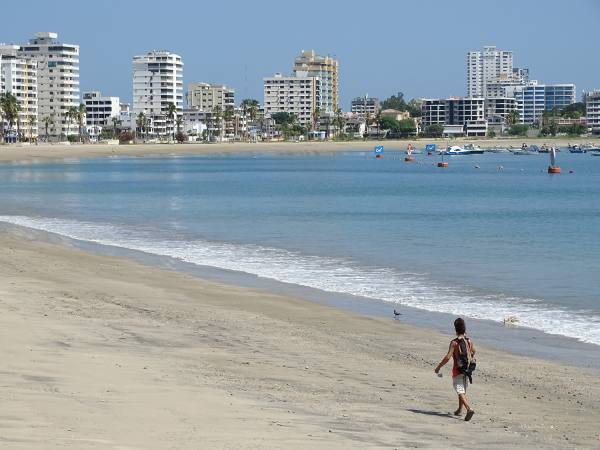

Salinas, destino que atrapa con sol, mar y aventura
Escrito el:
"Uno de los balnearios más importantes de Ecuador se ubica en Santa Elena. Sus lugares turísticos permiten disfrutar de buenos momentos en familia y amigos."